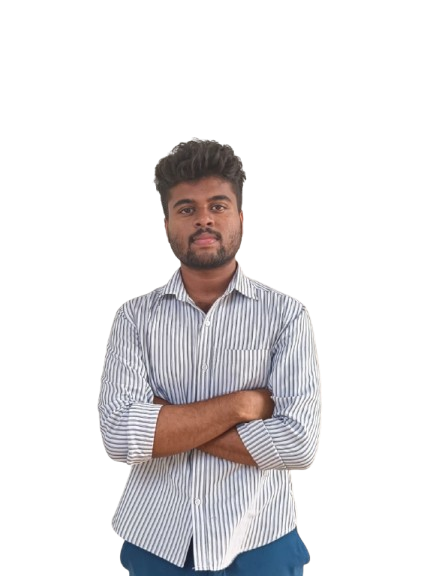

B.Tech First Year ECE Student @ College Of Engineering Trikaripur, Cheemeni. I'm a curious guy flabbergasted by the world of technologies.
I spend my time learning new things, coding, ESP32, any curious thing i can find. I do love travelling and meeting curious people !
GitHub Repo Linkedin
Still under progress project.
KannuA blind assist project. Ulitizing an ESP32 and ESP32-CAM to build a vision system that analyses the surrounding using Yolo and feeds the information back. It was build as part of the project building competition held @ Polytechnique College Trikaripur
Mentored for the Women's Hackathon held @ College Of Engineering Trikaripur.
IEDC Cluster level Hackathon WinnerWe presented our idea regarding AgriTech in the respective of the agricultural landscape of Kasaragod along with my mate Adith K
WaveQuest WinnerOur team won the first place during the WaveQuest Signal Hunting, held by IEEE CUSAT. We had a great time at CUSAT exploring the campus and learning about basics of signals with ESP32.
Among the top 5 candidates from the IDEON bootcamp3 day IEDC IDEAON 1.0 Bootcamp at College of Engineering Trikaripur, We learned all about problem solving and entrepreneurship through hands on challenges.
IEEE Cetkr
IOT LeadMulearn Cetkr
Internship CoordinatorIIC IEDC (Nova) Cetkr
8.8 SGPA